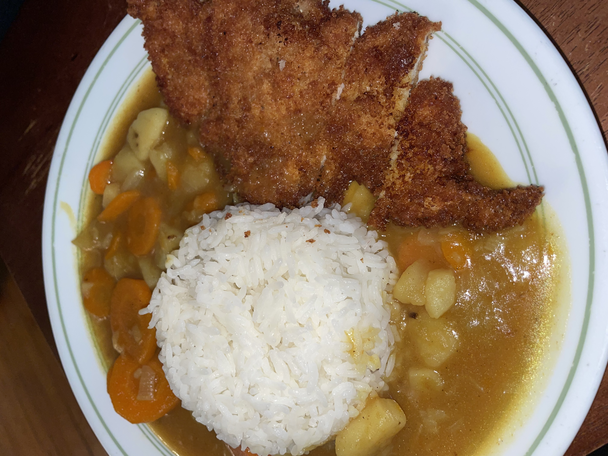

Chicken Katsu Curry is an easy recipe to make. At the end of this recipe, feel free to check out other recipes that will take your meal to the next level. In the meantime, enjoy this recipe of mine that is perfect for the cold, Fall weather!

Photo Credit: Neomi's Kitchen
For the Chicken Katsu
For the Curry and Rice